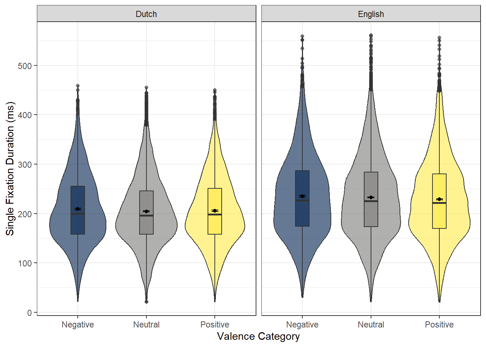
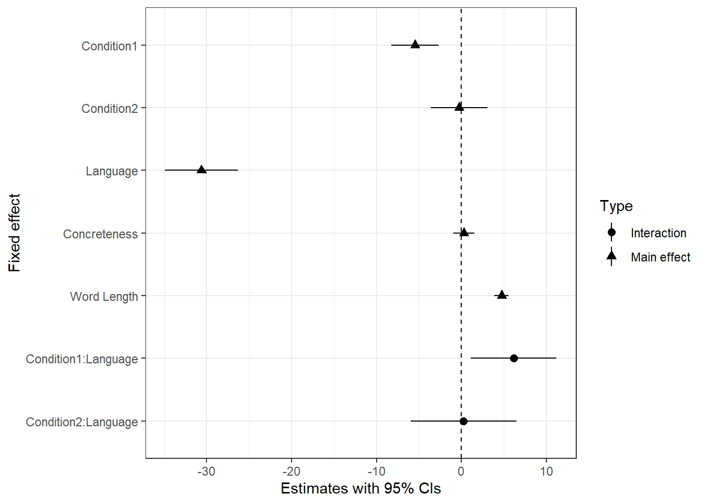
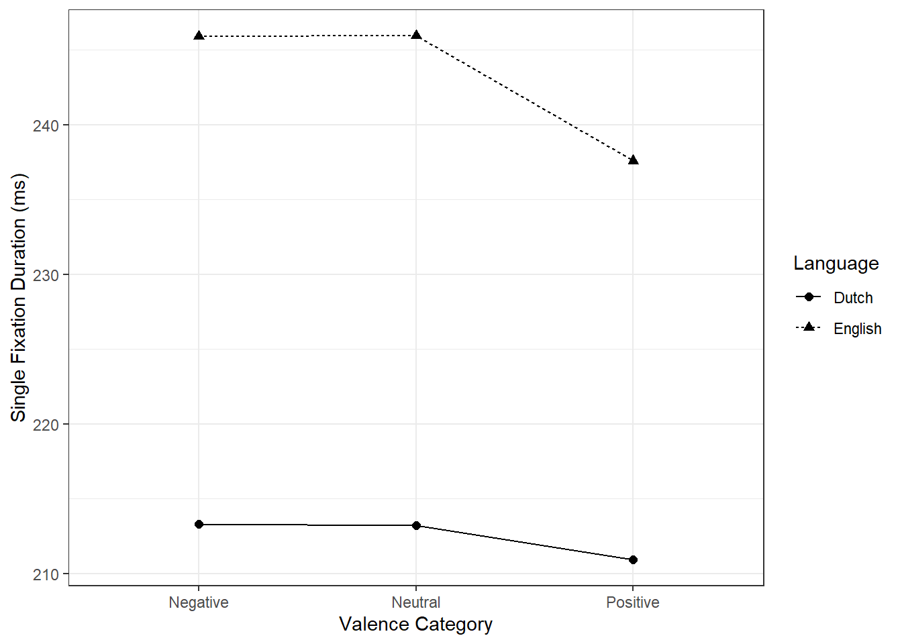
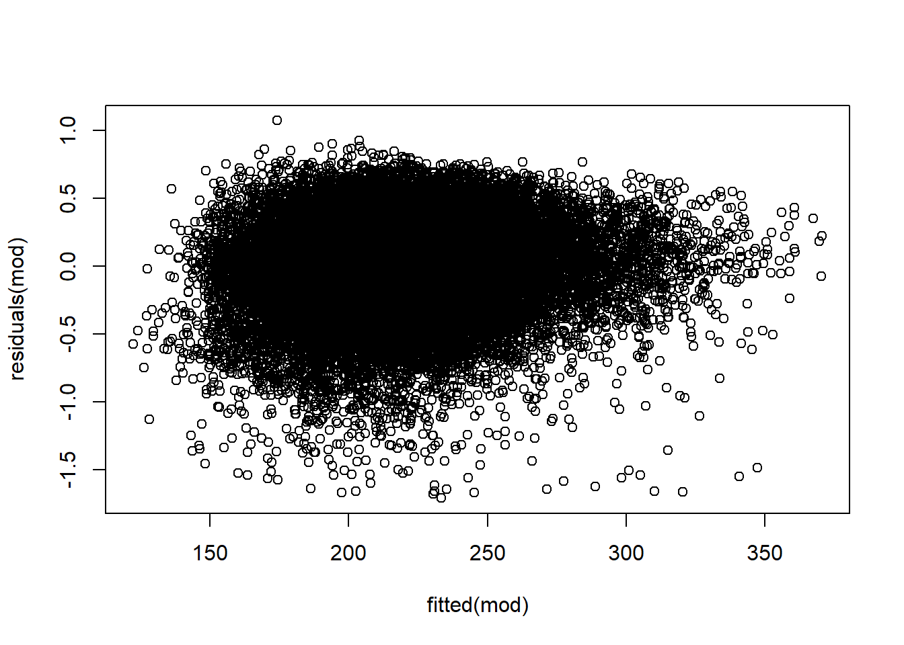
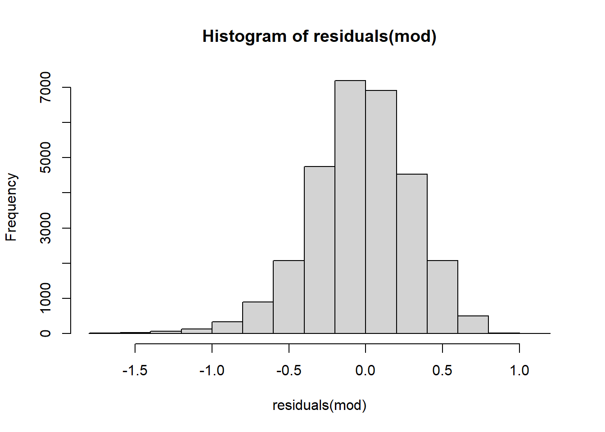
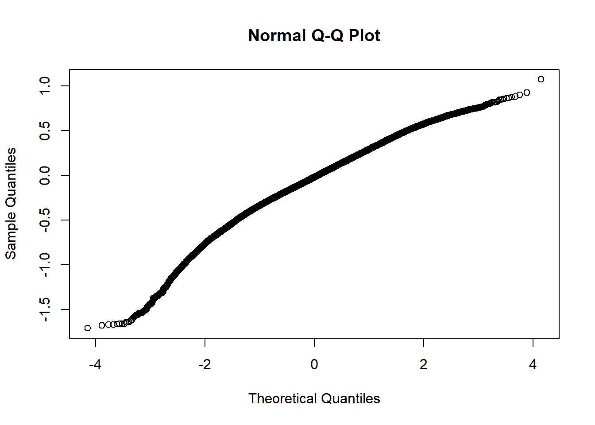

Chapter 4 Visualisation
4.1 The final reading dataset
A violin-box plot is created for the final reading dataset for analysis.
ggplot(ReadingData_ENandNL, aes(x = V_Category, y = WORD_FIRST_FIXATION_DURATION, fill = V_Category)) +
geom_violin(alpha = .6) +
geom_boxplot(width = .2, alpha = .6) +
stat_summary(fun = "mean", geom = "point",
position = position_dodge(.9)) +
stat_summary(fun.data = "mean_se", geom = "errorbar", width = .1,
position = position_dodge(.9))+
scale_x_discrete(name = "Valence Category") +
scale_y_continuous(name = "Single Fixation Duration (ms)") +
scale_fill_viridis_d(option = "E") +
facet_wrap(~Language) +
theme_bw() +
guides(fill = FALSE)
4.2 The baseline model (mod)
I created a Blobbogram for Generalised linear mixed-effect model.broom.mixed::tidy() works on LMM to create a model summary. I then added factor to split the data for colours.
modelsummary_vis <- broom.mixed::tidy(mod, effects = c("ran_pars", "fixed"),scales = NULL, ran_prefix = NULL, conf.int = TRUE, conf.level = 0.95, conf.method = "Wald") %>%
filter(effect =="fixed") %>% filter(term!="(Intercept)")
#Add factor to split the data for colours
modelsummary_vis$Type <- as.factor(ifelse(str_detect(modelsummary_vis$term, ":"), "Interaction", "Main effect"))Below ggplot() coding was run to generate a Blobbogram. Condition1 refers to Positive vs Neutral; Condition2 refers to Negative vs Neutral. The minimal theme is applied to make it black & white = colourblind friendly.
ggplot(modelsummary_vis, aes(x = term, y = estimate, ymin = conf.low, ymax = conf.high, shape = Type)) +
geom_pointrange() +
ylab("Estimates with 95% CIs") +
geom_hline(aes(yintercept = 0), linetype = "dashed") +
scale_x_discrete(limits = c("V_Category_NeuNeg_dev:Language_dev", "V_Category_NeuPos_dev:Language_dev", "WORD_LENGTH", "Conc_Mean", "Language_dev", "V_Category_NeuNeg_dev", "V_Category_NeuPos_dev"),
labels = c("Condition2:Language", "Condition1:Language", "Word Length", "Concreteness", "Language", "Condition2", "Condition1")) +
xlab("Fixed effect") +
coord_flip() +
theme_bw()
4.3 emmip: Interaction-style plots for estimated marginal means
plot_dat <- emmip(mod2, Language~V_Category, plotit = FALSE)
ggplot(plot_dat, aes(x = xvar, y = yvar, group = tvar, linetype = tvar, shape = tvar)) +
geom_point(size = 2) +
geom_line() +
labs(x = "Valence Category", y = "Single Fixation Duration (ms)", linetype = "Language", shape = "Language") +
theme_bw()
4.4 Assumption Checking
- Linearity

Absence of collinearity
Homoskedasticity Again, this can be checked with residual plots.

- Normality of residuals


Absence of influential data points This assumption is met with visual investigation of violin boxplot.
Independence This assumption is met with modeling (fixed effects: Valence cagetory, Language; random effects: Concreteness, Word Length).